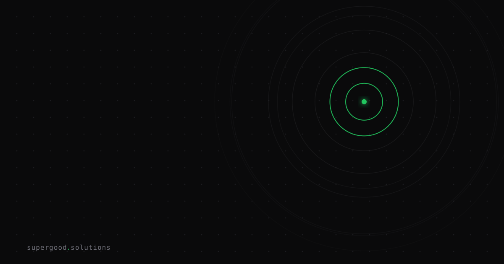

Chaining AI Agents Together Multiplies Your Failure Surface
TL;DR: Every agent you add to a pipeline adds a handoff, and handoffs are where multi-agent systems actually break — not inside the agents. The agent that visibly fails is usually two steps downstream of the one that caused it, and you cannot tell which without a distributed trace most teams never instrumented.
Key Insight
The pitch for multi-agent architectures is decomposition: a researcher agent, a writer agent, a critic agent, each with a tight prompt and a narrow toolset. Smaller surface per agent, better results per agent. That part is true.
The part nobody prices in: you didn't decompose the problem, you distributed it. And distributed systems have a failure class that monoliths simply do not have — the failure that lives in the space between components.
The Berkeley MAST work (Why Do Multi-Agent LLM Systems Fail?) is the clearest evidence for this. The authors annotated execution traces across seven popular multi-agent frameworks and derived 14 failure modes in 3 categories, with strong inter-annotator agreement (Cohen's kappa 0.88). The categories are worth memorizing:
- Specification issues — disobeying task or role specification, step repetition, loss of conversation history, no awareness of stopping conditions.
- Inter-agent misalignment — conversation reset, failure to ask for clarification, task derailment, information withholding, ignoring another agent's input, reasoning-action mismatch.
- Task verification — premature termination, no or incomplete verification, incorrect verification.
Look hard at category 2. Every mode in it is a handoff failure. Information withholding, ignored input, conversation reset, derailment — none of these can occur in a single-agent loop, because there's no second party to withhold from. You bought that entire category the moment you added agent number two.
Now add the arithmetic. At 95% per-step reliability — which is a good agent — an eight-handoff pipeline finishes clean about 66% of the time. Push per-step reliability to 99% and you're at 92%. The reliability you need per agent is not "pretty good," it's a function of how many of them you chained, and most teams never do that multiplication before choosing an architecture.
Why Teams Miss This
They test agents in isolation and integrate on faith. Each agent has an eval set. Each agent passes. The eval harness feeds every agent a clean, hand-written input — not the messy, truncated, subtly-wrong output the upstream agent actually produces at 2am on a long-tail request. You have unit tests and no integration tests, and you shipped it.
The error surfaces far from where it was introduced. This is the expensive one. A retrieval agent quietly drops a constraint from the user's request. The planner, downstream, plans against the incomplete brief — correctly, given what it received. The writer executes the plan — correctly. The critic approves the output — correctly, against the plan it was shown. Every agent behaves reasonably. The output is wrong. Your alert fires on the critic, and the defect is three hops upstream in a message nobody logged.
Debugging that is not prompt engineering. It is root-cause analysis on a distributed system, and if your instinct is to open the critic's prompt and start tweaking, you'll spend a week hardening the one component that did its job.
Nobody stored the trace. Teams log the final output and the top-level input. Maybe they log each LLM call. Almost nobody logs the handoff payloads with a shared correlation ID and parent-child relationships. So the reconstruction is manual, partial, and only possible for failures you can reproduce — which excludes the nondeterministic ones, which is most of them.
"Add a critic agent" gets treated as a fix. It's the reflex response to a quality problem, and it's often the wrong move. MAST's third category exists precisely because verifier agents fail too — incorrectly verifying, verifying incompletely, or terminating early. A critic that approves bad output is worse than no critic, because it launders the failure into something that looks reviewed. You've added a handoff and a false signal.
How to Actually Do It
1. Do the multiplication before you draw the architecture. If a task needs five sequential agents, ask what per-agent reliability gets you an acceptable end-to-end number. If the answer is 99.5% and your agents test at 94%, the architecture is wrong — not the prompts. Collapse steps, or make handoffs verifiable.
2. Instrument handoffs as spans, not log lines. This is the single highest-leverage change, and there's now a standard to follow instead of inventing your own schema. The OpenTelemetry GenAI conventions define agent span operations — create_agent, invoke_agent, execute_tool — with attributes like gen_ai.agent.name and gen_ai.operation.name. Use them, so your traces are readable by tooling you haven't picked yet.
from opentelemetry import trace
tracer = trace.get_tracer("agents")
def invoke_agent(name: str, payload: dict) -> dict:
with tracer.start_as_current_span(f"invoke_agent {name}") as span:
span.set_attribute("gen_ai.operation.name", "invoke_agent")
span.set_attribute("gen_ai.agent.name", name)
# The handoff payload is the evidence. Record it, bounded and redacted.
span.set_attribute("handoff.input.digest", digest(payload))
span.set_attribute("handoff.input.constraints", len(payload["constraints"]))
result = AGENTS[name].run(payload)
span.set_attribute("handoff.output.digest", digest(result))
span.set_attribute("handoff.constraints_preserved",
set(payload["constraints"]) <= set(result["constraints"]))
return resultBecause the child agent runs inside the parent's span context, the trace records who called whom with what — which is exactly the question you can't answer today.
3. Make the handoff a typed contract, and validate at the boundary. Free-text handoffs are how constraints evaporate. Give each edge a schema and assert on it — cheaply, in code, without another LLM call:
class Brief(BaseModel):
objective: str
constraints: list[str] # MUST survive every downstream hop
sources: list[str]
def assert_no_constraint_drop(upstream: Brief, downstream: Brief) -> None:
lost = set(upstream.constraints) - set(downstream.constraints)
if lost:
raise HandoffViolation(f"constraints dropped at boundary: {sorted(lost)}")This catches information withholding and task derailment at the edge where they happen, not four hops later in a customer complaint. A deterministic assertion at the boundary beats a critic agent at the end — it's cheaper, it can't hallucinate, and it names the guilty hop.
4. Build integration evals from real upstream output. Freeze actual production outputs from agent N — including the ugly ones — and use them as the eval inputs for agent N+1. Clean synthetic inputs test a pipeline you don't operate.
5. Give every run one correlation ID and keep the payloads. One run_id threaded through every agent, tool call, and retry, with handoff payloads persisted at least as long as your incident review window. When something goes wrong you want to replay the chain, not reconstruct it from memory.
6. Set explicit stopping conditions per agent. "Unaware of stopping conditions" and "premature termination" are two separate MAST modes, and both are trivially preventable with an explicit max-iteration bound plus a defined done-condition. Most frameworks default to neither.
What We've Learned
The useful reframe: a multi-agent system is a distributed system that happens to be made of language models, and it deserves the observability discipline you'd give any distributed system. We spent fifteen years learning that microservices need tracing, correlation IDs, and contract tests at the boundaries. Agent pipelines rediscovered microservices and skipped all three, because the components talk in English and English feels like it doesn't need a schema.
None of this is an argument against multi-agent architectures. It's an argument that the cost of one is paid in observability, not prompts — and teams that budget for the prompts and not the tracing are the ones running pipelines they can't debug.
Concrete next experiment, roughly a day of work: take your worst recent multi-agent failure and try to answer one question from your existing logs — which agent first dropped or corrupted the requirement? If you can't answer it in under ten minutes, you don't have an agent quality problem yet. You have an instrumentation problem, and it's hiding the agent quality problem underneath it.
Sources
- Berkeley MAST paper, 14 failure modes across 3 categories from annotated multi-agent traces: Why Do Multi-Agent LLM Systems Fail? (arXiv:2503.13657)
- MAST taxonomy, dataset, and LLM-as-a-Judge annotator, open-sourced: github.com/multi-agent-systems-failure-taxonomy/MAST
- OpenTelemetry GenAI agent span conventions, including
invoke_agentnaming andgen_ai.agent.name: gen-ai-agent-spans.md - The GenAI semantic conventions repository, spans, metrics and events for agents and MCP: github.com/open-telemetry/semantic-conventions-genai
- Cognition's case against multi-agent architectures and for context continuity: Don't Build Multi-Agents
- Anthropic on the engineering cost of a production multi-agent system, including tracing and durable state: How we built our multi-agent research system
Have a specific workflow in mind?
Bring it to a Quick Scan — a live working session where we'll tell you honestly whether it should be an agent, a workflow, or left alone, before you spend a dollar building it. You get 3 prioritized recommendations on the call, a one-page summary after, and the $500 credited toward any engagement within 30 days.
Get new posts + practical agent-ops notes
One email when something new goes up. No nurture sequence, no spam — unsubscribe whenever you want.